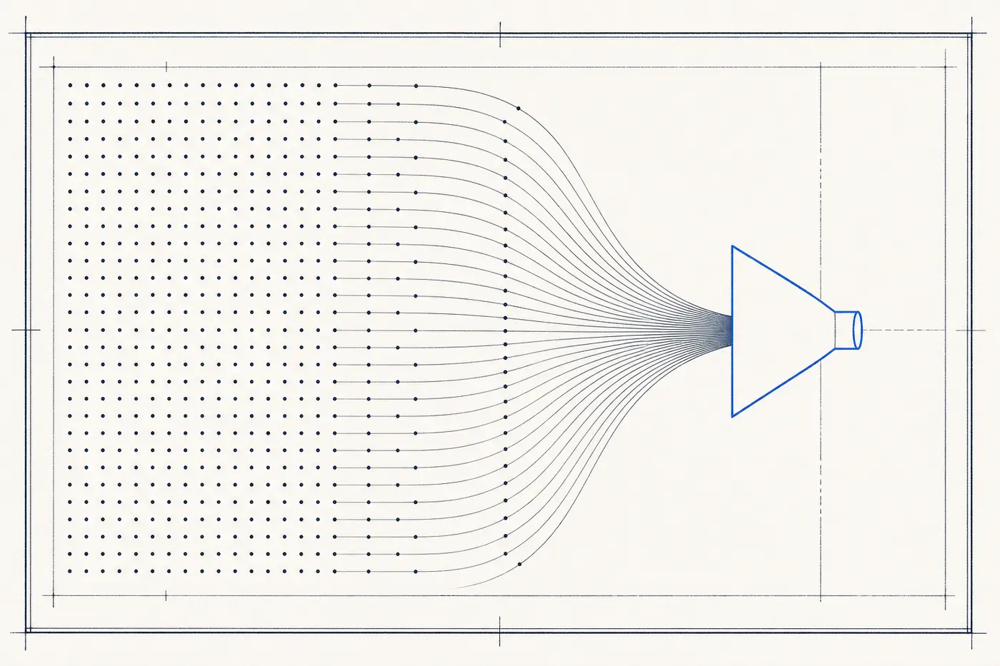

Demand Gen
Pipeline-generation specialists: outbound agencies, ABM and intent-data services, and paid-acquisition firms — 48 US vendors whose product is qualified opportunity flow.
The wall
The demand wall is the bluntest one: not enough qualified pipeline. Referrals and word of mouth carried the company to its current size and have flattened; the sales team is good but under-fed; growth has become a function of luck rather than a number that can be planned. This is the wall companies usually feel first and understand last.
What the discipline is
Demand Gen covers vendors whose deliverable is pipeline: outbound and cold-email agencies, account-based marketing (ABM) programs, intent-data services that identify in-market buyers, and paid-acquisition specialists focused on lead flow. It is deliberately separated from the Sales pillar — generating opportunities and converting them are different capabilities, bought from different vendors.
How vendors in this category work
Engagements are retainers scoped to activity and volume — sequences sent, accounts targeted, meetings booked — with performance pricing (per meeting, per qualified lead) common at the outbound end. The buyer's diligence question is qualification: volume is easy to manufacture, and the difference between vendors is almost entirely in whether the meetings they set are with buyers who match the ICP.
The US demand generation market at a glance
Questions buyers ask
Questions sourced from live Google "People Also Ask" data for this discipline (harvested August 2026); answers are The Wall's own.
What is demand generation in simple terms?
Demand generation is the marketing work that creates awareness, interest, and ultimately qualified pipeline among buyers — educating the market that is not yet shopping and being findable to the part that is. In practice, vendors in this category are hired to convert a target market into a steady flow of sales conversations.
What is the difference between demand generation and lead generation?
Demand generation builds interest and trust across the whole future market; lead generation captures contact information from buyers showing intent now. One creates the demand, the other harvests it. Most engagements blend both, but the emphasis determines the tactics — education and air cover versus outbound and capture.
What does a demand-gen engagement actually include?
Typical components: defining the ideal customer profile and target account list, building outbound sequences across email and LinkedIn, running paid programs to create air cover, using intent data to prioritize in-market accounts, and reporting on opportunities created rather than clicks. Deliverables are pipeline metrics, not impressions.
What is B2B demand generation?
The B2B variant targets buying committees rather than individuals: most of the market is not actively shopping at any moment, so the work splits into demand creation (educating out-of-market buyers so the brand is on the list when they enter the market) and demand capture (winning the small in-market fraction now). ABM is this logic applied account by account.
Is demand generation the same as sales?
No — demand gen manufactures qualified opportunities; sales converts them into revenue. The disciplines fail in each other’s absence, which is why this index separates them: a company whose reps close well but starve needs this pillar, while a company drowning in leads it cannot convert needs the Sales pillar.